Openshift
Plataforma como Serviço para microservicos executados em containers
Agenda
|
Part 1: O Que é "PAAS"?
Platforma como Serviço
- Construa e teste rápido aplicações.
- Codifique aplicações que podem ser implantadas em arquitetura hibrida.
- Utilize a facilidade, escalabilidade e poder da computação em Nuvem.
| Code | Deploy | Enjoy |
Part 2: Docker
O que é um Container?
 |
|
Containers vs. VMs
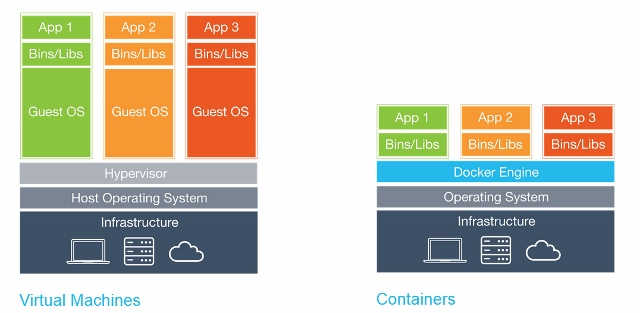Layers and UFS

Layers and UFS
- Um ou mais file systems read-only e um file system read/write
- Todos são apresentados como um único file system utilizando um dos seguintes métodos: device mapper thin provisioning (direct-lvm, loopback-lvm) ou nível do filesystem (btrfs, OverlayFS)
- O comportamento é similar a um LiveCD
"Container de Volume de dados": Um container Docker com apenas um file system read/write, podendo existir somente no container or com link para uma storage no hospedeiro
Imagens
- Imagens podem ser obtidas e adicionadas em um servidor de imagens.
- Imagens podem ser versionadas e receber tags.
- É possível fazer um diff entre diferenter versões de um Containers para verificar como elas diferem da imagem base.
Criando link entre Containers
 |
|
Docker: Pros e Contras
|
PRÓS:
|
CONTRAS:
|
Limitações Docker
- Docker não enxerga algo que não está no mesmo host
- Docker não pode provisionar containers que possuem relacionamento como uma unidade
- Docker não possui capacidade para gerenciar configuração de implantação em massa.
Solução:
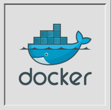 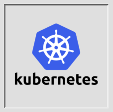
Kubernetes:
"grego para 'piloto' ou 'timoneiro'."
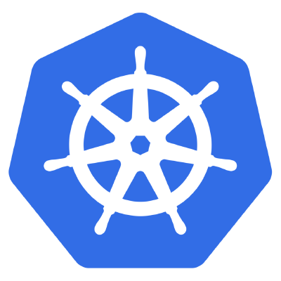
Terminologia Kubernetes
| 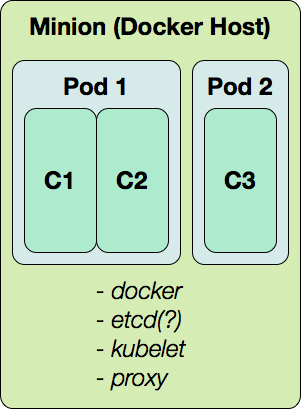 |
|
etcd
- Database key/value de alta escalabilidade
- suporte a cluster nativo
- Algorithm baseado em consenso RAFT
Minion Daemon:
kubernetes-kubelet

- Principal responsabilidade: gerenciamento de pod
- Mantém o registro do estado dos pods
- Recebe instruções de um cluster master
Minion Daemon:
kubernetes-proxy

- O proxy service mapeia as portas comuns em todos os minions para os pods relevantes através o cluster inteiro
- Pods são escolhidos comparando nome na definição do proxy com os nomes dos pods
- O mapeamento de uma porta do host minion para o nome do pod é chamada de serviço
More on Labels

- A label or consists of a key and a value (also called a selector)
- A pod can have any number of labels; each label must have a unique key
- Examples:
service=nginx,environment=prod,tier=frontend
Gerenciamento de Cluster
| 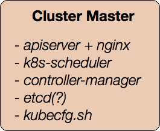 |
|
API do Kubernetes
- Minions (docker hosts)
- Pods (docker container configurations)
- Services (port proxy mappings)
- Replication Controllers (replicated, monitored pod deployments)
controller-manager
and Replication Controllers
- Voce diz o que precisa, ele decide quais minions fazer deploy
- Monitoramento constante; inicia e para os pods de acordo com a necessidade (configuração de quantidade de pods)
- Desacoplado do proxy de serviço
Limitações Kubernetes
- Não possui o conceito de applicação completa.
- Não possui capacidade de contruir e implantar imagens Docker a partir do código fonte.
- Não possui lifecycle (CI / staging / production).
- Não possui foco em experiência de usuário e administrador.
Solução:
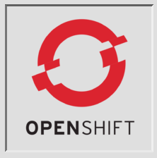
Part 4:
O que é possível fazer com OpenShift?
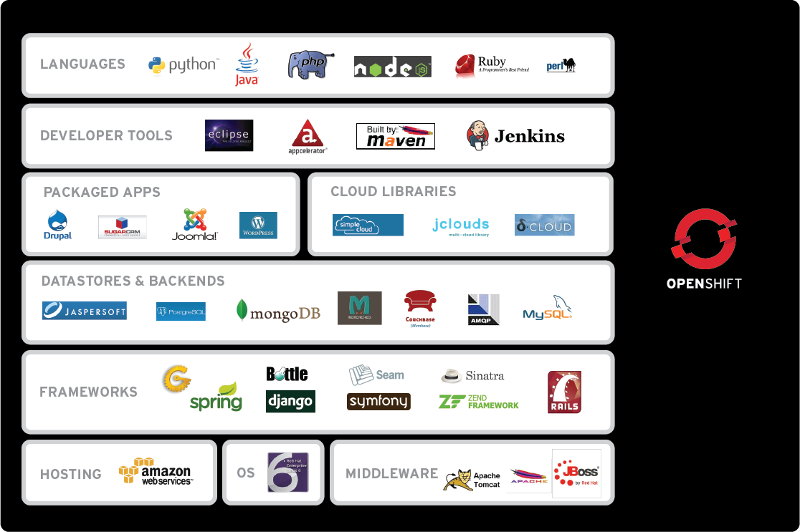Como funciona?
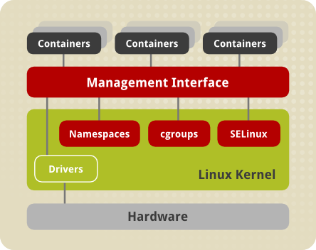Provem suporte a multi-tenancy via containers linux
Como funciona?
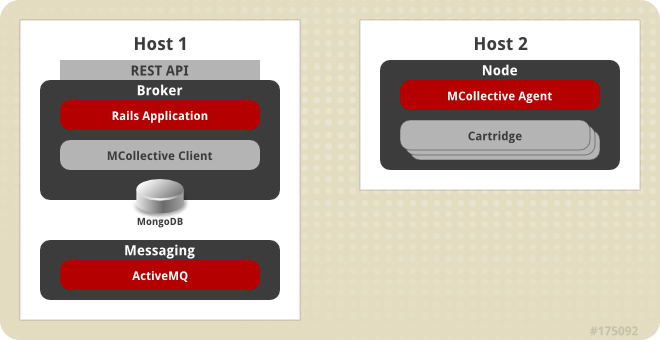e adiciona gerenciamento centralizado e facilidade para escalar aplicações implantadas
Arquitetura AWS
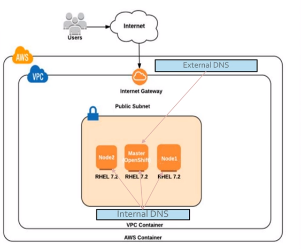Arquitetura

Arquitetura Openshift
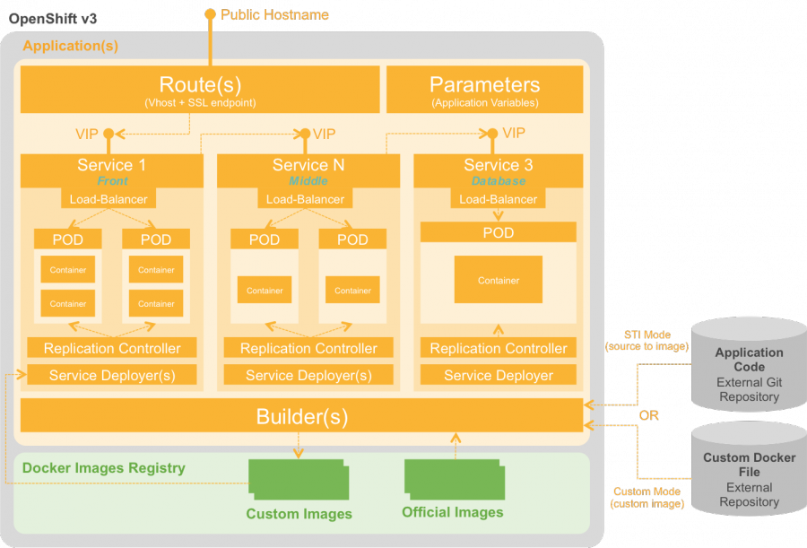Build Option #1:
docker-builder
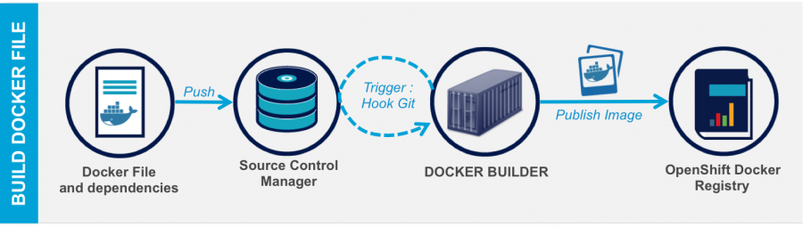
Build Option #2:
Source-to-Image (sti)
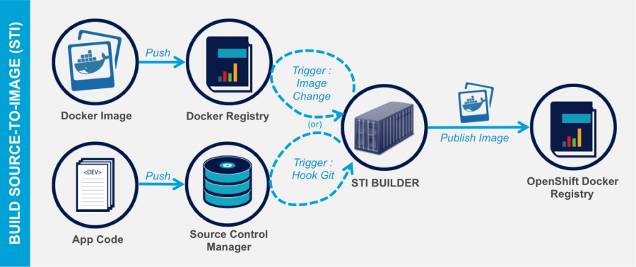
Lifecycle in OpenShift 3:
Implantação
|
|
Políticas de Trigger de Implantação
|
Manual |
Alteração no código 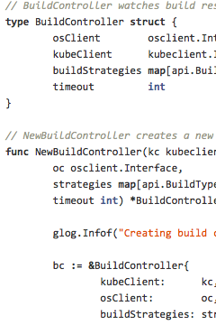 |
Alteração na aplicação |
Alteração na imagem 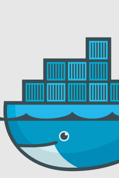 |
Estratégias de implantação
|
Arquitetura Aplicação
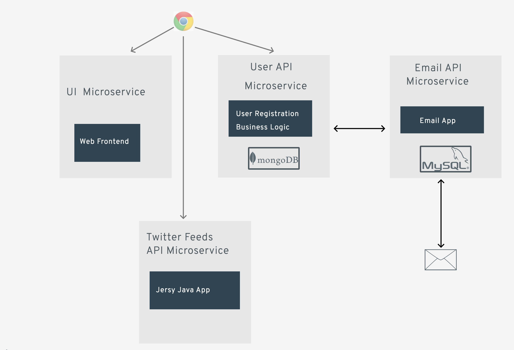
Projeto

Pod
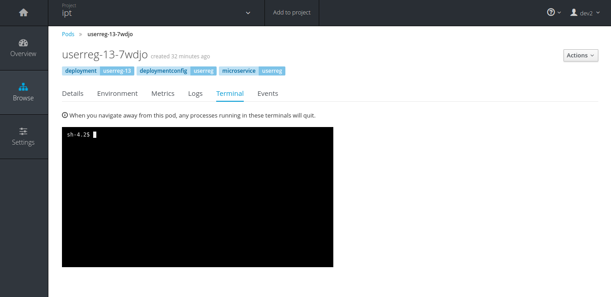
Menu
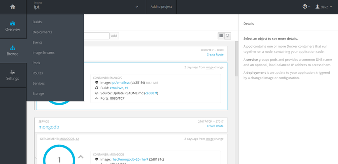
3 pods sem auto escalonamento
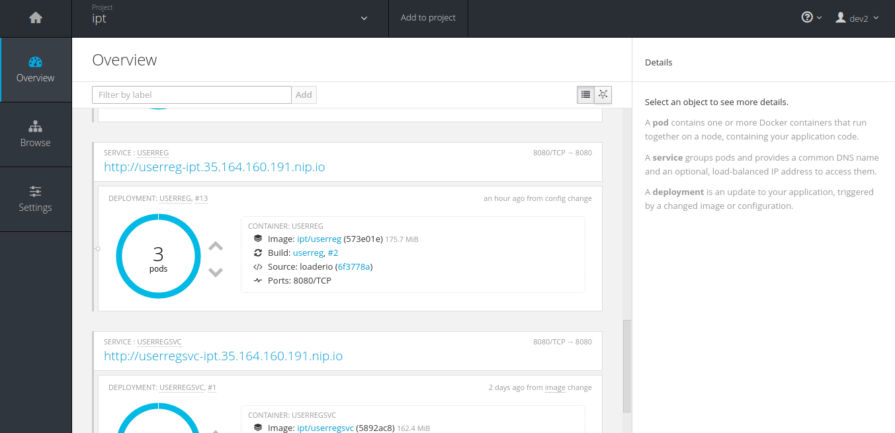
3 pods sem auto escalonamento
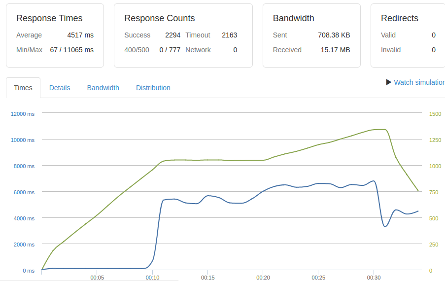
auto escalonamento

auto escalonamento
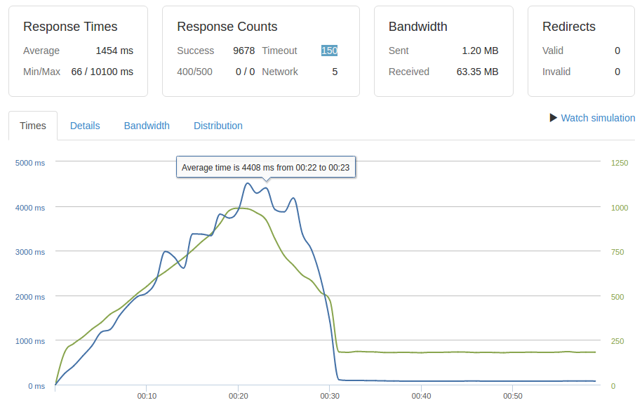
Obrigado!
Links:
- Docker: docker.com
- Kubernetes: github.com/GoogleCloudPlatform/kubernetes
- OpenShift 3: github.com/openshift/origin